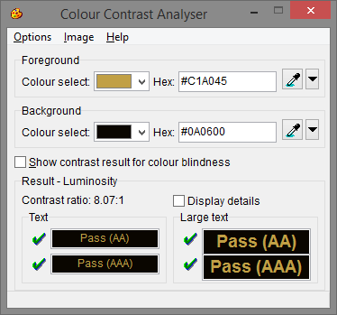
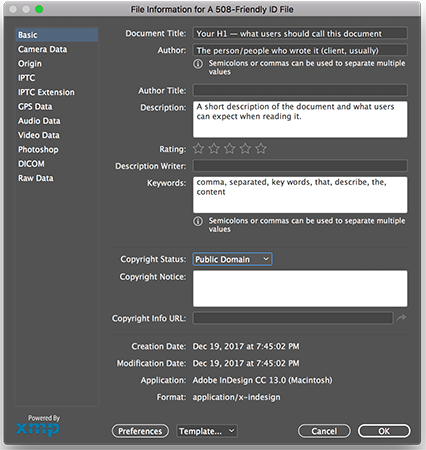

Brown Bag
December 20, 2017
In 1998, Congress amended the Rehabilitation Act of 1973 to require Federal agencies to make their electronic and information technology accessible to people with disabilities.
At CH, we often use "508" and "accessibility" to describe the same things.
Accessibility is a concept that stretches beyond the specific guidelines of Section 508.
Online you may see accessiblity mentioned in shorthand as "a11y".
User-centered design is core to our work at CH.
We consider the intentions and goals of our users in that process. The abilities and limitations that users bring to our work can affect their experience in many ways.
What are some user limitations that come to mind?
P has Multiple Sclerosis, which affects both her vision and her ability to control a mouse. She often gets tingling in her hands that makes using a standard computer mouse for a long period of time painful and difficult.
M can’t consistently tell her left from her right. Neither can 15% of adults, according to some reports. Directions on the web that tell her to go to the top left corner of the screen don’t harm her, they just momentarily make her feel stupid.
Z doesn’t have what you would consider a disability. He has twins under the age of one. He’s a stay-at-home dad who has a grabby child in one arm and if he’s lucky one or two fingers free on the other hand to navigate his iPad or turn Siri on.
An Alphabet of Accessibility Issues
Permanent or temporary, everyone experiences limitations.
What tools and devices are used by people with special needs (temporary or permanent)?
Accessibility exists on a spectrum - you can always find ways to improve accessibility if you look hard enough.
It is easier to identify something that is not accessible. Much harder to say without a doubt "this is accessible".
The W3C Guidelines require an appropriate amount of contrast between on-screen text and it’s background.
Per the W3C Guideline 1.4
Distinguishable: Make it easier for users to see and hear content including separating foreground from background.

Use word styles!
Don't put extra spaces between paragraphs
Add meta tags
Make sure that all text shows up in the Outline view (in the right order)
Stuff you do in InDesign/Word will carry over (for the most part)

You can find in-the-weeds resources (including videos!) here.
Timed transcript
On screen text screen should match text being read
Let’s look at some specific 508 examples and considerations.
ONC slideshow:
https://www.healthit.gov/playbook/pe/infographic-2/
https://communicatehealth.github.io/2015/06/accessibility-testing/
What can we do to accommodate and make our work inclusive?
This is the primary goal of accessibility.